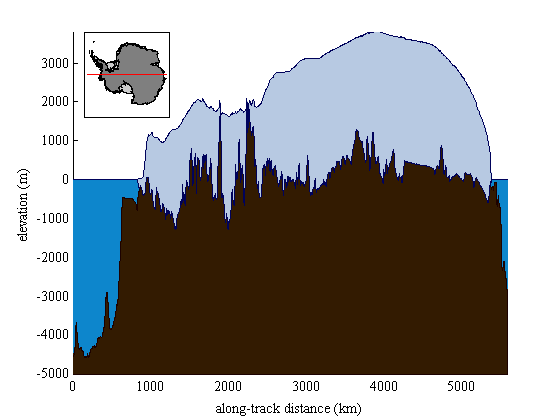
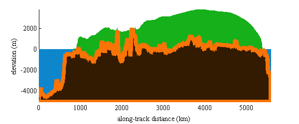
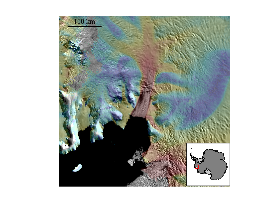
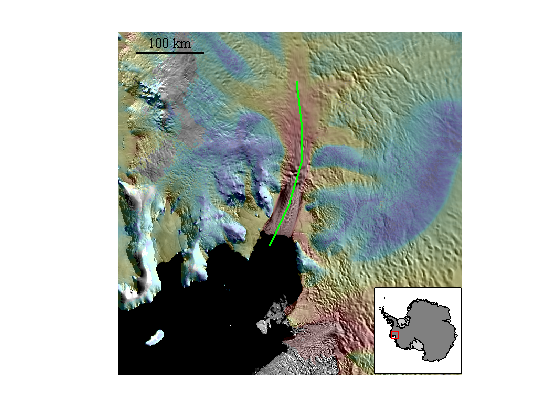
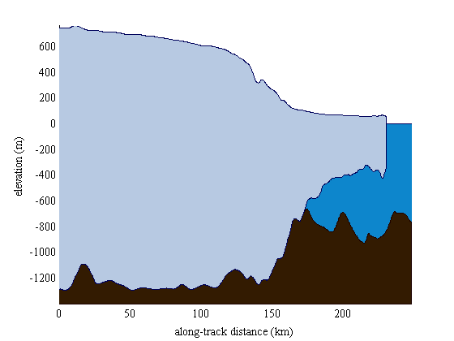
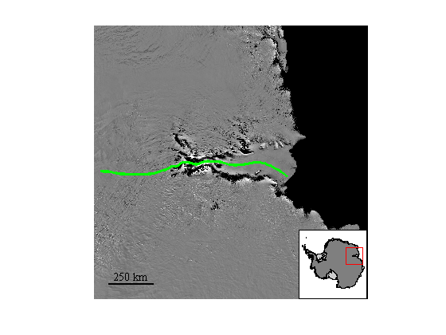
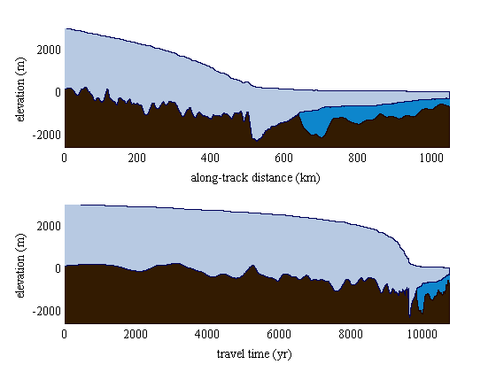

bedmap2_profile documentation
This function plots a 2D profile of ice, water, and rock elevations along any lat,lon path in the Antarctic.
Contents
Syntax
bedmap2_profile bedmap2_profile(lat,lon) bedmap2_profile(...,'horiz',HorizontalAxisValues) bedmap2_profile(...,PatchProperty,PatchValue) bedmap2_profile(...,'inset',InsetLocation) bedmap2_profile(...,'wgs84') [hice,hbed,hwater] = bedmap2_profile(...)
Description
bedmap2_profile called without any arguments opens a user interface on a current map. While the interface is open, click on the map to define a profile path. Undo points by hit Backspace. When you're satisfied with a path you've drawn, hit Enter to create a profile. To quit the user interface without creating a profile, hit Esc.
bedmap2_profile(lat,lon) plots a side-view profile along a path given by lat,lon. lat and lon must be 1D arrays of equal length. If only two points are entered, an equally-spaced 1000-point line is created between those points.
bedmap2_profile(...,'horiz',HorizontalAxisValues) specifies horizontal axis values where HorizontalAxisValues is a 1D monotonically-increasing or decreasing array of dimensions corresponding to lat and lon. By default, HorizontalAxisValues are calculated as pathdist(lat,lon,'kilometers') if you have Matlab's Mapping Toolbox or the sum of linear distances between points if you do not have the Mapping Toolbox license. If you prefer to plot profiles with respect to some other values such as latitude of a north/south transect, use bedmap2_profile(lat,lon,'horiz',lat).
bedmap2_profile(...,PatchProperty,PatchValue) specifies edge line width, face color, and edge color of ice, water, or bed. The following properties may be specified:
- 'iceface',ColorSpec
- 'iceedge',ColorSpec
- 'iceedgewidth',LineWidth
- 'waterface',ColorSpec
- 'wateredge',ColorSpec
- 'wateredgewidth',LineWidth
- 'bedface',ColorSpec
- 'bededge',ColorSpec
- 'bededgewidth',LineWidth
- 'sky',ColorSpec
bedmap2_profile(...,'wgs84') plots profiles relative to the WGS84 ellipsoid. (Profiles are plotted relative to the GL04c geoid by default.) Note: Ice surface, ice thickness, and bed elevations are plotted correctly when using the 'wgs84' tag; however, ocean surfaces will appear at zero, which could be innacurate by 60 meters or so.
bedmap2_profile(...,'inset',InsetLocation) places an inset map on the plot for context. Inset map placement may be specified as
- 'NorthEast' or 'ne' for top right corner (default)
- 'NorthWest' or 'nw' for top left corner
- 'SouthWest' or 'sw' for lower left corner
- 'SouthEast' or 'se' for lower right corner
[hice,hbed,hwater] = bedmap2_profile(...) returns handles of ice, bed, and water patch objects.
Requirements
This function requires Matlab, Antarctic Mapping Tools, and the Bedmap2 Toolbox for Matlab. Antarctic Mapping Tools and the Bedmap2 Toolbox are available on the Mathworks File Exchange site.
Example 1: Cross-continental transect
To view a slice of Antarctica down its center, you can enter (lat,lon) coordinates as multiple-point arrays, or you can simply define the end points of a straight line. Here we slice Antarctica along 90°W and 90°E, with both end points at 65°S latitude. For context, place an inset map at the top left corner with 'inset','nw':
lat = [-65 -65]; lon = [-90 90]; bedmap2_profile(lat,lon,'inset','nw')
Example 2: Customize appearance
Using the lat,lon data from Example 1, we can create a profile of green ice on bedrock outlined by thick orange lines. I'm using my rgb function to generate RGB triplets for colors by their names, but you can enter any RGB values you'd like, or Matlab color strings like 'red' or 'w'.
figure('position',[100 100 600 250]) bedmap2_profile(lat,lon,... 'iceface',rgb('green'),... % green ice 'iceedge','none',... % no ice edge color 'bededge',rgb('orange'),...% orange bed edge 'bededgewidth',8,... % thick bed edge color 'sky','white') % turn off yellow sky
Example 3: Click to create a profile
If you have a map of your favorite area, you can easily define a lat,lon profile by clicking on the map. This should work even if your map is in polar stereographic units.
If you are interested in a flow line down Pine Island Glacier, you may have a map like this, which we create with the modismoa function:
figure modismoa('pine island glacier') scalebar('loc','nw') measures('speed','pine island glacier',... 'facealpha',.2,'colorbar','off',... 'inset','se')
To manually define a profile down the central flow line of PIG, call bedmap2_profile without any inputs and start clicking. Hit Enter when you're satisfied with your profile.
bedmap2_profile 
close all
Example 4: A better flowline profile
In Example 3 we approximated a flow line down Pine Island Glacier using a few linear sections; however, ice does not typically flow in straight lines. For a better flow line, we can use the flowline function. Starting at (77.43°S, 60.49°E) we get this flowline:
[latstream,lonstream,~,t] = flowline(-77.43,60.49,2000);
which we can plot on a map like this:
modismoa('lambert glacier',1500,'inset') plotm(latstream,lonstream,'g','linewidth',3) scalebar
Now we have this nice flow path defined by latstream,lonstream and we want to use bedmap2_profile to view a profile along the flow path. Depending on your work, you may wish to show the profile as a function of distance traveled, or latitude, or even by travel time. Here we plot an elevation profile as a function of along-track distance (default behavior) and then plot an elevation profile as a function of travel time:
figure subplot(211) bedmap2_profile(latstream,lonstream) subplot(212) bedmap2_profile(latstream,lonstream,'horiz',t) xlabel('travel time (yr)')
I want to drive home the point that the two plots above show the same profile. From the spatial point of view, about 60% of the glacier is grounded and the rest is floating. Even call it half and half if you're not too concerned with details. But how a snowflake experiences life is much different from what we see. For ten thousand years that snowflake may live with its compacted friends on land, then only in the final few hundred years of its frozen life does it retire to a home on the water.
Author Info
The bedmap2_profile function was written by Chad A. Greene of the University of Texas at Austin's Institute for Geophysics (UTIG). February 2015, updated December 2015.